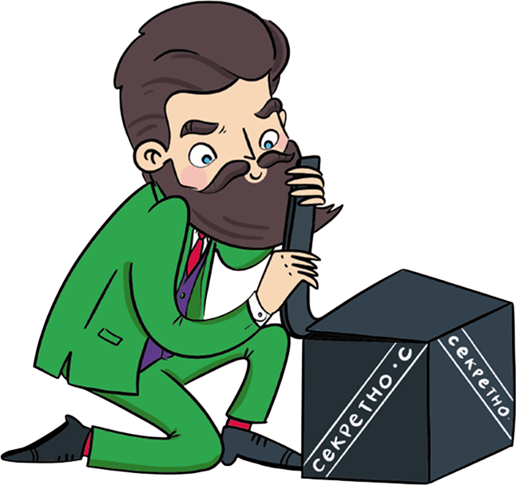
Представьте, что у вас вышла книга. Сразу же после её выхода появился недоброжелатель-коллега: у себя в соцсетях, у вас на страницах, на сайтах онлайн-магазинов, где продается книга, он настойчиво пишет негативные отзывы и ставит вам низкие оценки.
Вы лично не знакомы, но являетесь друзьями в соцсетях.
Сегодня вы увидели очередной негативный комментарий о вашей книге под постом с рекомендацией её прочитать, написанным вашим хорошим знакомым.
Эта история поможет понять главный принцип, на котором строится эта книга:
Согласны?
А значит, вместо гнева и беспомощности испытывать радость от предвкушения чего-то невероятно интересного и увлекательного.
Поверьте, что любая ситуация, в которой вы оказались, общаясь с другими людьми, даже самая неприятная, таит в себе удивительную возможность, осталось только разгадать какую.
Как это сделать – будем тренироваться!
В своей истории я нашла такое решение-игру: теперь под каждым комментарием хейтера я ставлю его порядковый номер, со стороны это выглядит очень забавно: сколько времени человек тратит на книгу и её автора, которые якобы оставили его равнодушным.
Помните?
Давайте разберем, какие техники общения работают в плюс, какие – в минус, на примере кейса с книгой.
Представьте, что у вас вышла книга. Сразу же после её выхода появился недоброжелатель: у себя в соцсетях, у вас на страницах, на сайтах онлайн-магазинов, где продается книга, он настойчиво пишет негативные отзывы и ставит вам низкие оценки.
Вы лично не знакомы, но являетесь друзьями в соцсетях.
Сегодня вы увидели очередной негативный комментарий о вашей книге под постом с рекомендацией её прочитать, написанным вашим хорошим знакомым.
Удалить этого человека из друзей и заблокировать для него возможность видеть ваши публикации.
Если ситуация вам некомфортна, вы тратите время и силы на неприятные переживания, а способа развернуть ситуацию себе в плюс вы не видите, то это хорошее решение – вы оградите себя от неприятного.
Ничего не отвечать, но комментарий не удалять.
Возникает ощущение, что вы не знаете, как ответить. Появляется вседозволенность, следующие комментарии могут быть еще более хлесткими.
Исключение: если у вас много положительных комментариев рядом и если своим текстом комментатор сам о себе все сказал (комментарий абсурдный, ядовитый или некорректный).
Не решает проблему.
Поблагодарите за интерес к вашей книге.
Звучит неискренне, плюс вы поощряете негативное поведение у себя на странице.
Спросите, что конкретно ему не понравилось.
Вы поощряете высказывания против вас, на них потом нужно будет реагировать, тратить время и силы. Интерес предполагает, что вы примете к действию обратную связь, если человек вам докажет свою правоту, а хотите ли вы этого?
Ирония провоцирует на ответные выпады, обостряет конфликт.
Перевести диалог в личные сообщения, узнать, в чем причина подобного поведения в личной переписке.
Вы тратите много времени и сил на негатив. Невозможно с каждым человеком, которому вы не нравитесь, пообщаться лично. Также становится очевидным, что ситуация для вас имеет большое значение – вы попадаете в зависимость от человека, который пишет негатив.
Ответить тем же, например, зайти на страничку его аккаунта и тоже написать негативный комментарий.
Это начало войны, которая не принесет вам никакой выгоды, только потерю ресурсов.
Написать в комментариях, что в следующей книге вы напишете о нем, не упоминая, в каком ключе.
Отличный ход, если это, действительно, будет интересно добавить в вашу книгу. Вы и даете обратную связь человеку, которой он так ждал, и используете ситуацию в своих целях, и делаете интересной ее для других читателей. При этом вряд ли кто-то захочет повторить опыт героя.
Написать пост на эту тему и предложить своим читателям обсудить ситуацию.
Нет необходимости терять время и реагировать индивидуально, можно сразу для всех обозначить свою позицию и получить интересную дискуссию у себя на странице.
Пример: «Вижу, что вы написали уже 5 отзывов на мою книгу, для чего вы это делаете?»
Вопрос о намерениях позволяет собеседнику увидеть свои действия со стороны и самостоятельно сделать вывод – стоит ли ему продолжать? Без нравоучений с вашей стороны.
Включить собеседника в игру, начав присваивать отзывам номера: «Отзыв номер 5».
Такой подход показывает ваше легкое отношение к ситуации, неуязвимость и неготовность принимать критику. И читателям наблюдать за такой очень интересно. При этом игра не несет негативных последствий для критика.
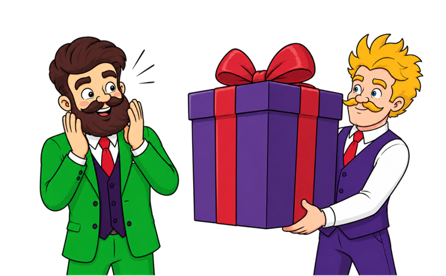
Поллианна, девочка из одноименной книги Элинор Портер, придумала игру в радость и изменила мир вокруг себя, общаясь с другими людьми и приглашая их в эту увлекательную игру.
Это книга номер 1, которую я советую прочитать тем, кто хочет быть успешным в общении.
Если вы уже читали эту книгу, предлагаю игру в радость.
Представьте кого-то из своих знакомых. Вообразите, что вы одолжили ему 10 000 рублей на 1 день, прошел месяц, он вам их не отдал и на сообщения не отвечает, хотя вы знаете, что с ним все хорошо.
Найдите в этой истории радость для себя, в чем она заключается?
Пример: «Да, деньги я потеряла, но зато теперь я знаю „цену“ своего знакомого и не потеряю больше!»
Пример: «Ну наконец-то, благодаря этой истории, у меня появилось железное правило „Никому никогда не занимать!“ Сколько я нервов теперь сэкономлю! А деньги я всё равно верну, есть идея как!»
Нет, не аргументы! Аргументы часто играют с нами дурную шутку: чем больше аргументируешь, тем больше у другой стороны желание сопротивляться.
Представьте, что вы работаете в компании и хотите увеличить себе зарплату.
Вы готовите массу аргументов и пытаетесь убедить директора, что вам пора увеличить зарплату.
В фильме «Неуязвимый» герой Брюса Уиллиса – Дэвид – повышает себе зарплату.
Дэвид через секретаря задает своему руководителю, Ноэлю, вопрос «Сколько раз я брал больничный, работая здесь?», который вызывает мощный внутренний диалог у директора с самим собой в роли Дэвида.
Ноэль: Ты получаешь прибавку в сорок долларов в неделю… и это всё.
(Тишина)
Ноэль: Я проверил. Ты был прав. Ты ни разу не брал больничный.
(Пауза)
Ноэль: Пять лет, ни одного больничного. Я понял. Ты хочешь прибавку. И ловко на это намекнул.
Дэвид не планировал увеличивать себе зарплату, он искал только подтверждения своих сверхспособностей – что он никогда не болеет.
Если бы директор задал ему вопрос о причине интереса, зарплату увеличивать не пришлось бы.
Для оттачивания навыка задавания эффективных вопросов хорошо подходит игра «Гений вопросов».
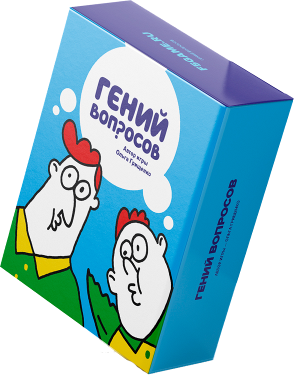
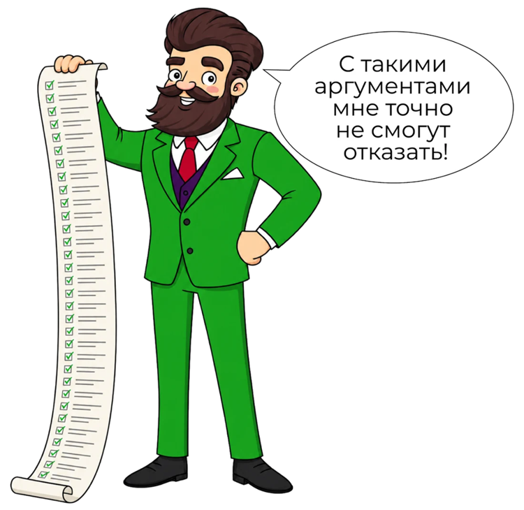
Используйте вопрос для ответа клиенту в ситуации:
Один влиятельный постоянный клиент хочет приобрести новый автомобиль любимой марки, однако прошлый опыт покупки данного авто разочаровал его: несмотря на любовь к бренду, он убедился в том, что сервисное обслуживание в дилерском центре оставляет желать лучшего.
Руководитель отдела продаж, естественно, пытается уговорить его на покупку. В процессе диалога они слышат ругань из клиентской зоны: клиент недоволен стоимостью ремонта, о чем сообщает сервисному консультанту; помимо прочего, из разговора слышно, что ему отказывают в выдаче подменного авто.
В ответ на растерянный взгляд руководителя отдела продаж клиент отвечает:
— Ну вот и последняя капля для отказа от покупки…
Если человека что-то не устраивает, и он уже принял решение об отказе – он уйдет и даже не вступит в диалог.
Основная задача – выяснить, что же он хочет. И, желательно, это делать на выгодном вам поле.
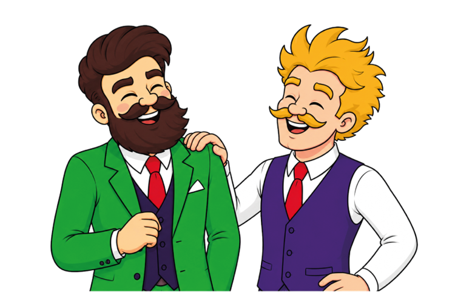
Учиться переговорным приемам можно не только по книгам, но и анализируя яркие диалоги в анекдотах.
Сегодня потренируемся находить подсказки.
— Галь, ну что тебе муж на юбилей подарил?
— Видишь ту красную Феррари?
— Да ладно!
— Вот такого же цвета варежки.
Достигнуто 100% включение собеседницы в диалог, её любопытство на пределе, этот разговор она никогда не забудет.
Дешевле. Сработал принцип контраста. Если мы хотим снизить ценность чего-либо, нужно сопоставить вещь с очень дорогой и значимой.
Возможно, ей не нравится избыточное вмешательство подруги в её жизнь, поэтому она решает проучить её с помощью удара юмора. Вряд ли захочется подруге еще раз переживать подобные негативные эмоции, как когда она поверила в подарок – Феррари.
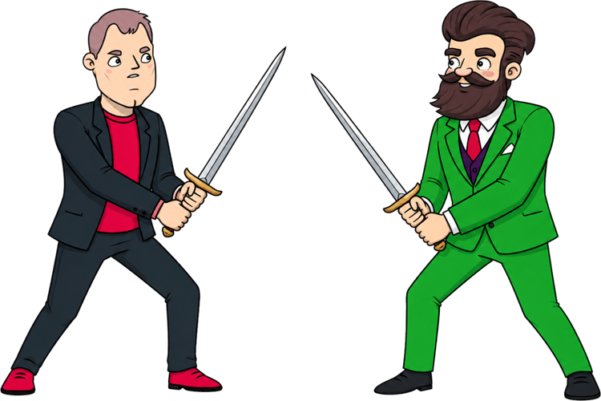
Есть две крайности в проявлении эмоций нашими оппонентами в переговорах: они могут вести себя как разъярённые тигры, а могут – как дохлые рыбы, не проявляя ни к чему интереса и живого участия.
Техника «Вызов» обладает фантастической мощью и возможностью захватить внимание оппонента и вызвать жгучий интерес к активным действиям.
К брошенному вызову можно добавлять лёгкое сомнение, что у собеседника получится этот вызов принять.
Министерство транспорта Чехии заключило четырёхлетний контракт на разработку и поддержку сайта (сервиса по продаже электронных разрешений на проезд по платным скоростным автомагистралям) с подрядчиком Asseco Central Europe — открытого конкурса не было. Госзаказ обошелся в 16 миллионов и вызвал возмущение в чешском IT-сообществе из-за «явного расточительства» со стороны правительства.
Владелец компании Actum Digital Томаш Вондрачек назвал тендер «абсурдным» и добавил, что при желании ту же работу можно сделать «хоть за пару дней»: «Я хочу, чтобы впредь никто не относился к нашим общим средствам так, как это сейчас делает государство».
Вондрачек предложил местным программистам объединиться и провести хакатон, чтобы создать аналог сервиса из госзаказа.
На призывы в соцсетях откликнулись более 300 программистов из Чехии. В офисе Вондрачека собралось 60 человек, которые за 22 часа непрерывной работы бесплатно сделали платформу fairznamka.cz, соответствующую большинству требований к сервису за 16 миллионов евро. И просто подарили сервис правительству, указав на необоснованные траты.
Во время хакатона на работу программистов приезжал посмотреть премьер-министр Чехии Андрей Бабиш, после чего он уволил министра транспорта.
В компании директор долго и безрезультатно бьется за своевременное выполнение всех задач, но все работники делают их с опозданием, либо не доделывают, включая совещание. И вот в очередной раз было оговорено, что опоздавший на совещание получит штраф. Один из ведущих работников приходит на совещание с пирожками и чаем, садится за стол переговоров и начинает есть. На вопрос директора «Что это?» работник отвечает:
— Я не успел поесть, мне же нужно когда-то обедать!
Есть ответы, которые мы даем от силы, есть – от слабости.
Ответ «Тогда вы заплатите штраф. Готовы?» – вызов от слабости.
Когда не знаешь, как реагировать на выпад собеседника, начинаешь искать опору, в данном случае пытаться использовать ресурс руководителя – угрозу штрафом.
Это вызов с сильной позиции, который собеседнику очень сложно принять. Так тоже можно использовать эту технику – дать вызов, от которого оппонент точно откажется, и получить за счет отказа преимущество.
Большая вероятность завершения диалога – сотрудник откажется от пирожков и примет участие в совещании, но, несомненно, с негативными эмоциями, как у вынужденного сдаться под воздействием чужой силы.
Вызов-игра, который сотруднику будет сложно не принять. Если он его примет, сразу же последует его активное включение в рабочий процесс – презентация и обсуждение идей, на негативные мысли не останется времени. Если сотрудник откажется от выбора, это будет его осознанная позиция, проявление отношения к работе, по факту которого руководитель уже может принять управленческое решение.
В нашем обществе действует навязанное заблуждение о том, что критика – это добро и все её обязаны слушать и принимать, а еще и благодарить.
Это не так. Критика практически никому не нравится, чаще всего разрушительно действует и принимать её никто не обязан.
Помните наш кейс в уроке № 1 про хейтера, который везде в соцсетях писал негативные отзывы на книгу?
то вы создаете позитивное подкрепление: вас можно и нужно критиковать, готовьтесь получать критические замечания дальше и идти по сценарию Золушки в её общении с мачехой и сестрами.
то вы перешли на поле критика, подтвердили его право вас критиковать, он управляет ситуацией – может принять ваш анализ, может не согласиться с ним. Зачастую разбор критических замечаний выглядит как оправдательная позиция.
и поднимаетесь над схваткой: задаете вопросы о том, для чего этот человек дает вам критику, как он понял, что вы ее запросили – это может быть корректным способом заявить о своей позиции в отношении критики и предотвратить ее появление в дальнейшем.
это ваше право и сильная позиция – не отвечать на критику, о которой вы не просили. Это очень сложно сделать в личном диалоге, проще – в пространстве соцсетей. Однако там есть опасность – подвешенное в воздухе критическое замечание может восприниматься свидетелями ситуации, как будто вас поставили в тупик.
Юмор помогает взять на себя управление ситуацией, расслабить атмосферу и озвучить вашу позицию о неприемлемости критики (если такая у вас, разумеется, есть) в более комфортной форме.
Но шутить нужно уметь – если шутка не сработала, готовьтесь переключить стратегию поведения.
Почему-то люди отвыкли говорить прямо и по существу, а ведь это так хорошо работает! Можно же прямо сказать: «Я не принимаю критику» или «Я не люблю, когда меня критикуют».
Но для такой фразы нужна огромная уверенность в своей позиции и внутренняя сила.
Один из самых лучших вариантов, если научиться применять. Принцип «антихрупкости» – делаем так, чтобы то, что против нас, работало на нас.
Например, если критическое замечание вы получили в социальных сетях, можно обсудить с вашими подписчиками, что отвечать на подобную критику, развить интересное и полезное всем обсуждение.
Или превратить ситуацию в интересное приключение, о котором можно рассказать в своей публикации или книге «Как меня критиковали и что из этого не получилось» 😀
Подумайте над ответом.
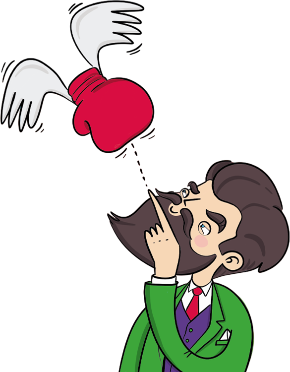
Бывают ли у вас ситуации, когда вы начинаете общение с негатива?
Много лет назад, когда у меня только появилась семья, мы жили весьма скромно – каждый рубль на счету. Для новой квартиры мы решили разориться и купить паркет вместе с настоящим деревянным плинтусом. После поставки обнаружилось, что пол и плинтус не везде совпадают по цвету.
Я ворвалась в магазин, кинула доски на пол и начала практически кричать о том, как меня обманули и что, заплатив такие деньги, я не ожидала получить брак. Растерянная директор магазина сначала пыталась мне объяснить, что это натуральное дерево и колебания цвета допустимы. А когда поняла, что это бесполезно, просто спросила, чего же я хочу, если заменить плинтус на полностью совпадающий по цвету невозможно?
— Мы покупали обои, там был небольшой брак, и нам сделали скидку 30%.
Нам вернули 30% от покупки, и я была счастлива.
Сегодня мне очень стыдно за этот поступок, и я делаю все возможное, чтобы расстаться с модой на негатив. Отслеживаю, как начинаю общение с людьми в бизнесе и в жизни.
Роль скандального клиента утратила былую выгоду. Раньше компании были готовы практически на всё, лишь бы удержать с трудом полученных клиентов, из них можно было верёвки вить.
Почему? Компании научились отказывать тем, кто им не по душе, и поставили крест на идиотской фразе «Клиент всегда прав». Некоторые даже умудряются себе пиар на отказах делать. На рынке всё больше уникальных, оригинальных компаний, потерять возможность быть клиентом которых – совершенно не хочется.
И если мы позволяем себе скандалы, негативные замечания и едкие публикации, нужно быть готовым к тому, что скоро обсуждать будет некого – компании могут отказать в своих услугах и оставить нас наедине со своей позицией.
Жесткие переговоры, которые раньше давали прекрасный результат в виде выбитых скидок, тоже теряют свою актуальность.
История про недовольную пассажирку авиакомпании SouthWest и ответ исполнительного директора Херба Келлера: «Нам будет вас не хватать», после которой она больше не смогла летать их авиарейсами.
А вот мой пример. Нам нужно было записать видео премьеры бизнес-игры. Мы нашли хорошего видеооператора, услышали цену и, проявив недовольство ценой, легко договорились о значительной скидке. Итог: накануне мероприятия нас поставили в известность, что планы у фотографа… поменялись. Пришлось срочно искать кого-то за ещё большую сумму.
Чем востребованнее специалист, тем проще ему расстаться с клиентами, сотрудничество с которыми приносит отрицательные эмоции или потерю большого количества времени.
И если роль плохого клиента становится фатальной, на сцену выходит клиент – положительный герой, которого в случае выбора и расставления временных приоритетов ставят на первое место.
С огромным трудом я нашла для себя настоящего профессионала в парикмахерском искусстве. У неё запись – на два-три месяца вперёд. Даже Пэрис Хилтон попала в список клиентов. Обычному человеку попасть к ней просто невозможно, она переадресовывает на других мастеров своего салона.
Для какого клиента в случае крайней необходимости найдётся дополнительное время? Для такого, как я.
Всем своим знакомым я с удовольствием рекомендую салон своего мастера, хвастаюсь фотографиями в социальных сетях, знакомлю своих клиентов с хозяйкой салона. В общем, как завещал Карнеги, я щедра на комплименты и с удовольствием запускаю «сарафанное радио». И это дает мне преимущество.
На что поменять моду на негатив и с чего начинать общение, если хочешь быть результативным, поговорим в одном из следующих уроков.
А пока – фиксируйте для себя, как вы начинаете общение со знакомыми и незнакомыми людьми, с каких фраз?
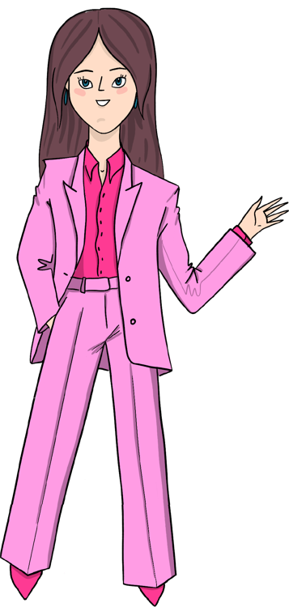
Любое литературное произведение дает нам уроки по общению.
Сегодня потренируемся анализировать уроки общения с помощью рассказа Ги де Мопассана «Ожерелье».
Многие люди живут по принципу «казаться, а не быть».
Они думают, что если ты будешь выглядеть как более успешные люди, то тебе откроются двери в высшее общество. На самом деле так происходит крайне редко (и про такие удивительные истории даже снимаются фильмы, такие как «Поймай меня, если сможешь»). Даже редкие истории заканчиваются разоблачением.
Если хочешь поменять окружение, то все усилия, в первую очередь, стоит направить на «быть».
Нет, не произвела бы. И дело не в бриллиантовом ожерелье, которое оказалось фальшивкой и для успеха в обществе не было важным. А во внутренней уверенности, которую оно принесло девушке из-за искренней веры в значимость этого украшения.
Так работает самосбывающееся пророчество.
Мы можем включать в себе состояние куража, и мир крутится вокруг нас, если мы верим в то, что на многое способны.
И можем привлекать неприятности, если верим, что только они с нами случаются.
Кстати, очень полезно обзавестись вещью-якорем, включающей состояние куража, не обязательно дорогой, как ожерелье в рассказе, но вдохновляющей.
Как входить в состояние куража – обязательно потренируемся на одном из уроков.
1. Пошла на необоснованный риск – как в казино, поставила всё, что есть, на бриллиантовое украшение и проиграла.
В этой игре невозможно было выиграть, всё, что игра давала, – это возможность побыть какое-то время в несбыточных надеждах на другую жизнь.
А шанс проиграть был. Если и делать рискованные ставки в жизни, то только если ты можешь выиграть и на ту сумму, с потерей которой ты можешь справиться.
2. Не рассказала сразу всю правду г-же Форестье. Матильду снова подвел принцип «казаться, а не быть». Даже если бы украшение было настоящим, шанс найти выход из ситуации при поддержке союзника всегда больше.
А вот это самое интересное. Матильда не вынесла урока из этой истории и успокаивает себя мыслью о том, насколько порядочный она человек. Но так как успокоение это слабое, она решает похвастаться своей порядочностью перед г-жой Форестье, а заодно и обвинить ее в своих мучениях!
Бывают у вас ситуации, когда вы оказываете помощь, а вас за это обвиняют?
Урок о силе открытости, честности и об искусстве спрашивать, расширять картину мира. Тогда и возможностей вокруг можно увидеть массу.
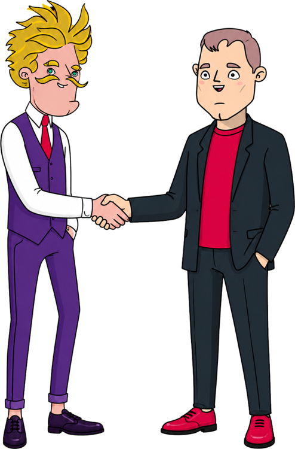
Ваш ответ на словесный удар от лица героя ситуации:
В большую компанию на должность менеджера по продукту устроился на работу молодой перспективный сотрудник. В устной речи он использует много англицизмов: таргет, ресёч, триггер, тизер и т. д.
На совещании, после выступления молодого сотрудника с предложением по продвижению продукта, опытный сотрудник спросил:
— Слушай, а русским языком мысли выражать не получается?!
Если вы пытаетесь поменять точку зрения оппонента, доказать, что вы правы, а он нет – готовьтесь к борьбе и конфликту, как к наиболее вероятному исходу.
Чтобы позволить себе прибегнуть к другому способу, поразмышляйте над фразой:
Ваш оппонент ожидает от вас сопротивления или попытки защититься. Если вы соглашаетесь от силы, у него пропадает почва из-под ног, он не знает, что дальше делать, раз атака не сработала.
Подчеркнуто сильное согласие, даже с вызовом. Может прекратить придирки раз и навсегда, но есть опасность, что вызов будет услышан и принят.
Согласие от слабости – извиняющееся и оправдывающееся.
Согласие от силы. Благодаря оппоненту молодой сотрудник разглядел то, как он говорит, и согласился с фактом, поскольку не видит в этом факте ничего плохого, более того, видит знак, что он уже стал профессионалом в своей сфере – там так принято говорить.
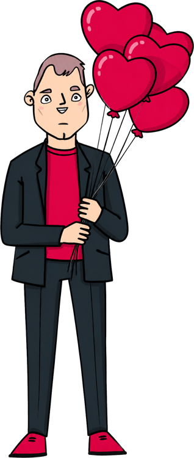
Первый урок, который нам дарит красная роза (и о котором я подробно рассказываю в своей книге тайн и секретов убеждения «Эффект красной розы») – это искусство создания первого впечатления.
То, как вы заходите в общение, предопределяет его исход, и очень хочется владеть хотя бы несколькими приемами впечатляющего начала, раз уж мы живем в экономике впечатлений.
Представьте, вы заходите на обучение, у вас что-то сломалось – не можете получить доступ, и вы пишете сообщение в технический чат.
Хотите, побуду Вангой и угадаю, о чем вы сейчас подумали?
Бывали ли у вас ситуации случайного знакомства и вызванного им успеха? У меня – масса.
Отслеживать привычку начинать с негатива – возможности уплывают, а вы об этом даже не подозреваете.
Вместо привычки к негативу при знакомстве с другими людьми внедрить привычку начинать с позитива «на всякий случай».
Поскольку владеют такой привычкой в нашем сумрачном мире единицы – вы будете всегда выгодно отличаться.
Самый простой способ создать первое впечатление – начать с комплимента.
С одной стороны – логично, никто же не спрашивал ваше мнение? С другой – а почему бы не написать и не произвести впечатление?
Что еще можно использовать для первого впечатления, кроме комплимента?
Моя любимая техника – это предсказание будущего.
Во времена стремительных изменений и тревоги за будущее люди ищут вокруг себя гаранта спокойствия (ухода от проблем и негатива) и чудесного будущего.
Вы можете стать этим гарантом.
Как? Транслируя с первых слов общения веру, что все будет не просто хорошо, а волшебно!
— Я сегодня читала статью с подсказками от известного футуролога Юваля Харари, там 5 главных подсказок, что нужно научиться делать, чтобы быть успешными в будущем, и они все про то, чем мы здесь занимаемся! Удивительно! Хотите, статью скину?
— Сегодняшний урок про критику – это просто шедевр, распечатаю эту информацию и повешу над столом, чтобы каждое утро напоминать себе, да и окружающим: я не должна принимать критику!!! Ради одного этого урока стоило идти в программу! (это текст участницы обучения, который был отправлен мне в личку).
— Сегодня я использовала технику ____ и получила _______ (результат)! Это оказывается так легко, у каждого может сработать!
Бить палкой по траве – это тринадцатая китайская классическая стратагема.
Стратагема – это заранее продуманная последовательность действий, направленная на достижение своей цели в сложной ситуации, в которой мы оказались.
В китайской культуре понятие стратагемы как военной хитрости существует не менее трёх тысячелетий.
Широкое распространение получили 36 древнекитайских военных стратагем, которым можно найти применение и в современном общении.
Если мы подозреваем, что в траве притаилась змея, можно ударить палкой, чтобы вспугнуть змею и очистить себе путь без риска быть укушенным.
Царь Чу объявил, вопреки советам первого министра, своим наследником Шанчэня.
Позже он изменил свое решение, пожелав, чтобы наследником стал его сын, и собрался понизить Шанчэня в должности.
Шанчэнь услышал об этом, но не знал, насколько слухи соответствуют действительности. Он спросил своего учителя, нельзя ли как-нибудь выяснить истину.
Учитель дал ему совет:
— Пригласи на пир сестру царя и обращайся с ней непочтительно.
Шанчэнь последовал совету.
Дама, с которой он был недостаточно обходителен, разгневалась и закричала:
— Ах ты, грубиян, не зря царь хочет тебя убить и вместо тебя назначить другого наследника!
После этого Шанчэнь устроил переворот и убил царя Чу, унаследовав его власть.
Здесь змеей оказались подлинные намерения царя Чу, а ударом палкой по траве – непочтительное отношение к сестре царя.
Задавать вопросы, помогающие обнаружить «змею» – истинные намерения собеседника.
Попробуем использовать стратагему «Бить палкой по траве» в этой ситуации.
В компании прошел конкурс по отбору кандидатов в отдел продаж. Из восьми претендентов конкурс прошел только один – самый перспективный. Директор компании поздравил кандидата с прохождением испытаний и торжественно сообщил ему, что менеджеры отдела продаж – единственные сотрудники в компании, кто имеет возможность получать зарплату выше, чем у директора. В ответ кандидат спросил директора:
— Скажите, а какая у вас зарплата?!
Обычно, в подобных ситуациях, люди интуитивно понимают – отвечать на подобный вопрос нельзя, поэтому:
И тот и другой вариант ответа не позволяют вскрыть истинные намерения кандидата.
— Интересно вы построили вопрос. Расскажите о его цели?
Задав такой вопрос, главное – настоять на ответе. Кандидат может увиливать, говорить, что он просто спросил, чтобы узнать примерный уровень зарплаты.
Тогда директор может усилить вопрос:
— И все-таки. Если бы вы хотели задать вопрос о зарплате менеджера, вы бы так и сказали. Но вы спросили о моей, для чего?
По форме ответа и даже неответа на эти вопросы можно получить очень важную информацию для принятия решения о начале работы с сотрудником.
Удар юмора уместно использовать в любой момент разговора.
Исключение – трагические ситуации.
Если у вас это утверждение рождает сопротивление, скорее всего, вы очень мало используете юмор, стараетесь быть серьезными и недооцениваете силу юмора.
– от слабости.
– от силы.
Как вы думаете, почему?
Юмор – это общение на равных, поэтому люди чаще всего шутят в компании друзей и коллег, побаиваются шутить, если считают кого-то значимее себя.
юмор нужен – чтобы создать атмосферу, лучший способ мгновенно расположить к себе, вызвать доверие.
– чтобы снять излишнее напряжение, сохранить возможность переиграть ваш запрос.
– разрядить обстановку, перевести в конструктивное русло диалог.
– расстаться на позитивной ноте, сохранить приятное послевкусие встречи.
Но у юмора есть секрет. Иногда прекрасный инструмент превращается в ядовитое оружие.
— Неужели нельзя было послать ко мне кого-то получше?
Это фраза-энкод из игры «Удар юмора».
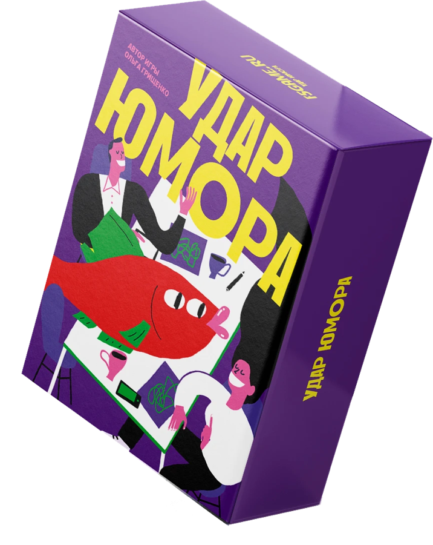
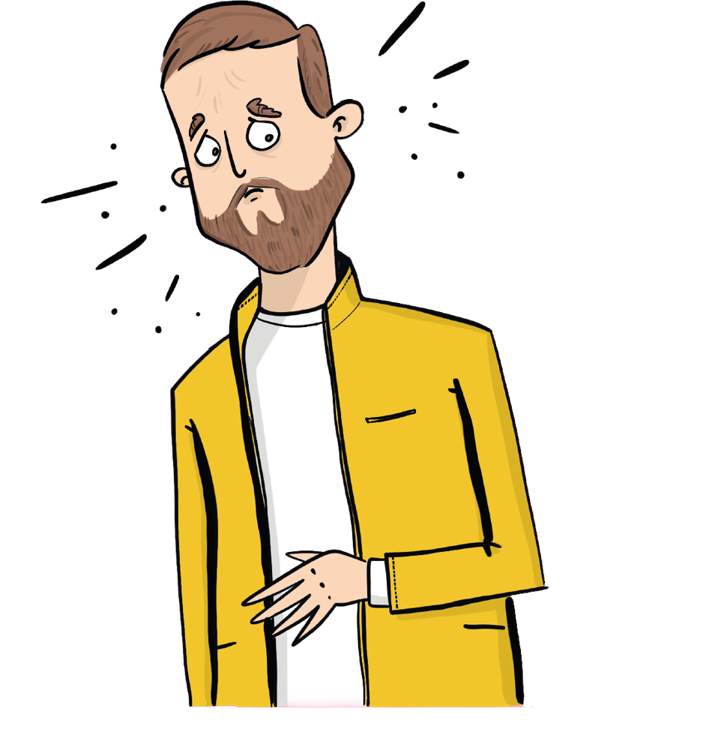
Энкод – это столкновение с неожиданностью собеседника с помощью яркой юмористической фразы, чаще всего, оторванной от основной темы разговора, как бы невпопад.
— Почему?
— Потому что гладиолус!
Авторы энкодов (от английского encode, «закодировать») – Вадим Петровский и Алексей Ходорыч.
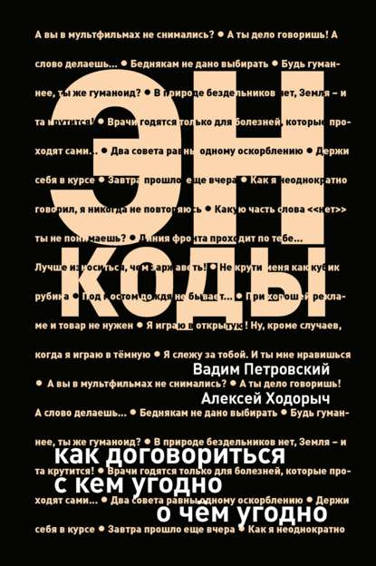
Энкоды используются как техники защиты при агрессивном нападении – помогают выиграть время и даже нейтрализовать противника.
Предприниматель приглашает своего друга к себе в офис. Друг приезжает в офис и просит угостить его чаем. Секретарь приносит предпринимателю и другу чай в пакетиках. Друг недоуменно восклицает:
— А ты что, чай «на верёвочках» пьёшь?!
Уместно, если дружба предполагает такое подтрунивание друг над другом. Тогда гарантирован взрыв смеха и увод от темы с явным намёком на то, что так с другом разговаривать не нужно.
Ответ-загадка. Непонятно, что за казус такой? Особенно эффектен, если сразу перевести тему и уйти от расспросов. Можно использовать вместо Кукоцкого свою фамилию. Тогда энкод становится универсальным уходом от ответа.
Энкод для позитивщиков. Переключает с деталей на глобальные вещи, обратный откат практически невозможен.
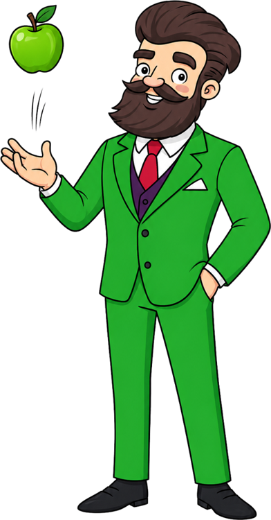
Мальчик: — Ненавижу твои истории.
Старуха: — Я знаю историю про мальчика, который ненавидел истории.
Старуха внимательно слушает, что ей говорит мальчик, и использует его же слова, чтобы заинтересовать, создать интригу.
Мы чаще всего начинаем общение с заготовленными репликами, которые крутятся в голове и вырываются наружу в первую же паузу.
И мы продавливаем свою позицию, гнем свою линию.
Как старуха ответила бы мальчику, если бы готовая идея была в ее голове, и она не слушала бы его слов?
Мальчик: — Ненавижу твои истории.
Старуха: — О, ты не представляешь, какая это история интересная, вот послушай!
Так сопротивление только увеличивается.
Потренируем технику «Я знаю, как это использовать!» А сначала – подсказка, чтобы она проще получалась.
Помните ситуацию, когда предложение полетело в мусорку? Это безумно интересно, вы попали в ситуацию, в которую не каждому герою фильма дано попасть!
И вы можете в эту невероятную историю погрузиться, пережить большое приключение с вашим собеседником и даже вспоминать о нем долгие годы.
На первом этаже жилого дома открылась маленькая кофейня. Парень, живущий в этом доме, стал заходить в кофейню каждое утро и час-полтора неторопливо сидеть с ноутбуком — почту проверить, новости почитать. Народу при этом почти никого, благодать! В очередной его визит в кофейню его прямо на пороге встречает администратор и говорит:
— Вы ничего не заказываете и долго сидите в интернете. Мне велено вас не обслуживать!
— Интересная ситуация какая! Тогда расскажите мне, что мне заказать, чтобы вы были рады меня видеть каждое утро?
С этой фразой уже точно можно зайти в кафе в хорошем настроении, смеясь над ситуацией, а не на волне негатива отправиться на поиски другого места, весь день отравляя себя мыслями о том, как вас обидели эти жуткие люди!
Плюс, выслушав ожидания администратора и/или хозяина, можно всегда договориться о комфортном для всех варианте. Или не договориться, получить в актив занятную историю, обсудить её в социальных сетях, если вы общаетесь с подписчиками.
Круто, если вы произносили: «О, это интересно!», пока читали техники «Гения общения» и будете их применять на практике